graph TD
A[Statistical Methods]
A --> B[Sign/Direction]
B --> C[Vote Counting]
A --> D[Confidence/Prediction Interval]
D --> E[CI/PI original/replication]
D --> F[Small Telescope]
A --> G[Meta-analysis]
G --> H[Equal and Random-effects]
G --> h[cumulative meta analysis]
G --> I[Q Statistics]
A --> J[Bayesian Methods]
J --> K[Replication Bayes Factor]
J --> z[Pawel model]
J --> a[Skeptical p value]
J --> b[Skeptical prior etz]
4 Statistical methods for replication assessment
Anderson & Kelley (2024) suggests that also the perspective of supporting the null hypothesis should be taken into account especially when we are really skeptical about the initial results. We want to replicate an effect to see the reliability, maybe better estimating the true effect with a larger sample (taking into account the inflation of the original effect) but we could also think that the original effect is a false positive and we want to do the replication to see if the null hypothesis is supported. The bayes factor approach by Ly et al. (2019) Verhagen & Wagenmakers (2014) is exactly about this. also equivalence testing is useful
4.1 Introduction
In the previous chapters we introduced replication from a statistical and theoretical point of view. We purposely omitted defining the outcome of a replication study to dedicate an entire chapter about this part. Similarly to the multiple definitions problem there are several statistical measures for the replication assessment. There are also multiple ways to propose a classification but we could indentify:
In addition to the multitude of methods, the field of replication measures is relatively new and keep growing proposing new metrics, simulation studies, and comparisons between methods. A review work could be in principle the best option but this is not feasible and also useful for a very active research area. There is an amazing project proposed by Heyard et al. (2024) where an extensive systematic review is supported by an online and keep up-to-date database with all replication measures organized and classified according to a common methodology. The authors reviewed roughly 50 different measures. The database is avaliable at the following link http://rachelheyard.com/reproducibility_metrics/.
We decided to make a selection of methods from the database according to the following criteria:
- for similar methods we keep the most recent and general version. For example, if a method \(x\) riginally developed for one-to-one replication designs has been extended to cover also one-to-many designs we will present the latter.
- we select both bayesian and frequentist methods
- we selected methods more related to inference and also methods more focused on estimation of the effect size
- we selected methods that are not linked to a specific research area or topic. For example in the database there are methods for voxels in fMRI research or methods for metrology.
4.2 Methods
- Prediction interval: replication effect in original 95% prediction interval
- Proportion of population effects agreeing in direction with the original
- Bayes Factor: Independent Jeffreys-Zellner-Siow BF test (default BF)
- Bayes Factor: Equality-of-effect- size BF test
- Bayes Factor: Fixed-effect meta-analysis BF Test (Meta-analytic BF) [this probably just a bayesian meta-analysis]
- Bayesian Evidence Synthesis (variant: Meta-Analysis Model-based Assessment of replicability (MAMBA))
- Bayesian mixture model for reproducibility rate
- Confidence interval: original effect in replication 95% CI (Coverage)
- Confidence interval: replication effect in original 95%CI (Capture probability)
- Continuously cumulating meta-analytic approach
- Correspondence test
- Credibility analysis (Reverse-Bayes, probability of credibility, probability of replicating an effect)
- Design analysis [type-m/s]
- Equivalence testing (TOST (two one-sided tests))
- Likelihood-based approach for reproducibility (Likelihood-ratio) [similar to bf?]
- Minimum effect testing [similar to small telescope?]
- P interval
- Prediction interval: replication effect in original 95% prediction interval
- Replication Bayes factor [already included]
- Sceptical \(p\)-value (versions: nominal sceptical \(p\)-value, golden sceptical \(p\)-value, controlled sceptical \(p\)-value)
- Sceptical Bayes Factor (Reverse-Bayes)
- Small Telescopes
- Snapshot hybrid (Bayesian meta-analysis)
- Z-curve (Exact replication rate, p-curves)
- Consistency of original with replications, \(P_{\mbox{orig}}\)
- I squared - \(I^2\) (Estimation of effect variance) [this can be togheter with Q and meta-analysis]
- Proportion of population effects agreeing in direction with the original, \(\hat{P}_{>0}\)
- Bland-Altman Plot (Agreement measures)
- Correlation between effects
- Difference in effect size (Q-statistic, (meta-analytic) Q-test, difference test, Tukey’s post-hoc honest significant difference test)
- Externally standardized residuals [idea di calcolare tipo m su effetto stimato]
- Meta-analysis
- Significance criterion (vote counting, two-trials rule, regulatory agreement)
4.3 Worth mentioning
- RepliCATS [subjective elicitation]
- Text-based machine learning model to estimate reproducibility
4.4 for me to check
- Causal replication framework
4.5 Simulating data
In light of the formalization presented in Chapter XXX and XXX we can formulate a general method to simulate data from the generative model ().
To simulate a single study we can define the true effect size parameter \(\theta_r\) and then generate two independent groups sampled from two normal distributions with variance equal to one. One of the distribution is centered on zero while the other distribution is centered on \(\theta_r\).
theta <- 0.3
n0 <- 30
n1 <- 30
y0 <- rnorm(n0, 0, 1)
y1 <- rnorm(n1, theta, 1)
mean(y1) - mean(y0) # this is the effect size[1] -0.02011754[1] 0.05565741Now we can simply iterate the process for \(R\) studies to create a series of replications with a common true parameter \(\theta\). We can also generate a more realistic set of sample sizes sampling from a probability distribution (e.g., Poisson)
R <- 10
yi <- vi <- rep(NA, R)
n0 <- n1 <- 10 + rpois(R, 40 - 10)
for(i in 1:R){
y0 <- rnorm(n0[i], 0, 1)
y1 <- rnorm(n1[i], theta, 1)
yi[i] <- mean(y1) - mean(y0)
vi[i] <- var(y1)/n1[i] + var(y0)/n0[i]
}
sim <- data.frame(id = 0:(R - 1), yi, vi, n0, n1)
sim id yi vi n0 n1
1 0 0.01476904 0.05239931 38 38
2 1 -0.02142140 0.04549403 51 51
3 2 0.36376339 0.03300727 49 49
4 3 0.39667421 0.05930267 44 44
5 4 0.26316570 0.05476932 37 37
6 5 0.14944415 0.04993779 45 45
7 6 0.34185438 0.03761737 46 46
8 7 0.45372498 0.05433267 46 46
9 8 0.50300280 0.05410981 40 40
10 9 0.37954551 0.06210466 40 40Then, if we want to include variability in the true effects as in the extension framework we can simply sample \(R\) \(\theta\)’s from a normal distribution with variability \(\tau^2\).
id yi vi theta n0 n1
1 0 0.003218650 0.03593693 -0.126228824 48 48
2 1 0.740607983 0.04974657 0.700254299 47 47
3 2 0.901889954 0.03934327 0.897036878 37 37
4 3 0.008334652 0.04281873 0.222999103 38 38
5 4 0.150974265 0.04332951 0.383630820 46 46
6 5 0.414119571 0.05491717 0.444614032 37 37
7 6 -0.374487466 0.06629007 -0.238958229 32 32
8 7 0.201141441 0.05602005 0.216779790 37 37
9 8 0.466078981 0.04478137 0.411308942 49 49
10 9 -0.196622204 0.04875768 0.002872426 37 37Then we can put everything in a function that can be used to simulate different scenarios.
sim_meta <- function(R, mu, tau2, n0, n1 = NULL, conf.level = 0.95){
if(is.null(n1)) n1 <- n0
if((length(n1) != R & length(n1) != 1) | (length(n0) != R & length(n0) != 1)){
stop("n1 and n0 need to be of length 1 or R")
}
if(length(n1) == 1) n1 <- rep(n1, R)
if(length(n0) == 1) n0 <- rep(n0, R)
theta <- rnorm(R, mu, sqrt(tau2))
yi <- vi <- rep(NA, R)
for(i in 1:R){
y0 <- rnorm(n0[i], 0, 1)
y1 <- rnorm(n1[i], theta[i], 1)
yi[i] <- mean(y1) - mean(y0)
vi[i] <- var(y1)/n1[i] + var(y0)/n0[i]
}
sim <- data.frame(id = 0:(R - 1), yi, vi, theta, n0, n1)
# compute other statistics
sim$sei <- sqrt(sim$vi) # standard error
sim$zi <- sim$yi / sim$sei # test statistics
tc <- abs(qnorm((1 - conf.level)/2))
sim$ci.lb <- sim$yi - sim$sei * tc
sim$ci.ub <- sim$yi + sim$sei * tc
return(sim)
}sim_meta(R = 10, mu = 0.3, tau2 = 0.1, n0 = 30) id yi vi theta n0 n1 sei zi ci.lb
1 0 0.12685160 0.06650511 -0.04926811 30 30 0.2578858 0.4918905 -0.37859538
2 1 0.32214536 0.06410597 0.36172305 30 30 0.2531916 1.2723384 -0.17410099
3 2 0.57035399 0.07591139 0.80030468 30 30 0.2755202 2.0700984 0.03034427
4 3 -0.33659132 0.07222032 -0.03667565 30 30 0.2687384 -1.2524869 -0.86330888
5 4 0.88320631 0.07125207 0.62179008 30 30 0.2669308 3.3087460 0.36003149
6 5 -0.08357788 0.06610357 0.02818698 30 30 0.2571061 -0.3250715 -0.58749667
7 6 0.45593954 0.05151685 0.29803240 30 30 0.2269732 2.0087811 0.01108017
8 7 0.16901371 0.06837960 0.22246040 30 30 0.2614949 0.6463364 -0.34350695
9 8 0.03551535 0.04562731 0.02705788 30 30 0.2136055 0.1662661 -0.38314372
10 9 0.05060030 0.05997280 0.02772444 30 30 0.2448934 0.2066217 -0.42938202
ci.ub
1 0.6322986
2 0.8183917
3 1.1103637
4 0.1901262
5 1.4063811
6 0.4203409
7 0.9007989
8 0.6815344
9 0.4541744
10 0.5305826The function can be easily extended for using different effect size measures or study designs but the overall idea is the same.
5 What is considered a successful or unsuccessful replication?
6 Some (random) concepts
6.1 Some (random) concepts
Credibility of scientific claims is established with evidence for their replicability using new data (Nosek & Errington, 2020)
Replication is repeating a study’s procedure and observing whether the prior finding recurs (Jeffreys, 1973)
Replication is a study for which any outcome would be considered diagnostic evidence about a claim from prior research (Nosek & Errington, 2020).
6.2 Difficulty in drawing conclusions from replications
Replication is often intended as conditioned to the original result. The original result could be a false positive or a biased result. Also the replication attempt could be a false positive or a false negative (Nosek & Errington, 2020).
. . .
To be a replication, two things must be true. Outcomes consistent with a prior claim would increase confidence in the claim, and outcomes inconsistent with a prior claim would decrease confidence in the claim (Nosek & Errington, 2020).
. . .
This is somehow similar with a Bayesian reasoning where evidence about a phenomenon is updated after collecting more data.
6.3 Exact and Conceptual replications
Exact replications are commonly considered as the gold-standard but in practice (especially in Social Sciences, Psychology, etc.) are rare.
Let’s imagine, an original study \(y_{or}\) finding a result.
- Replication \(y_{rep}\) with the exact same method find the same result. Replication or not?
- Replication \(y_{rep}\) with a similar method find the same result. Replication or not?
- Replication \(y_{rep}\) with similar method did not find the same result. Replication or not?
6.4 Direct and Conceptual replications (S. Schmidt, 2009)
A direct replication is defined as the repetition of an experimental procedure.
A conceptual replication is defined as testing the same hypothesis with different methods.
6.5 Exact replications are (often) impossible (S. Schmidt, 2009)
Let’s imagine an extreme example: testing the physiological reaction to arousing situation:
- The original study: Experiment with prehistoric reacting to an arousing stimulus
- The actual replication: It is possible to create the exact situation? Some phenomenon changes overtime, especially people-related phenomenon
Exact replication is often not feasible. Even using the same experimental setup (direct replication) does not assure that we are studying the same phenomenon.
6.6 As Exact as possible…
Even when an experiment use almost the same setup of the original study there is a source of unknown uncertainty. Which is the impact of a slightly change in the experimental setup on the actual result?
- A study on the human visual system: presenting stimuli on different monitors –> small change with a huge impact
- A study on consumer behavior: participant answering question using a smartphone or a computer –> small but (maybe) irrelevant change
How to evaluate the actual impact?
7 What we are going to do?
7.1 What we are (not) going to do?
. . .
- I will not present a strictly theoretical and philosophical approach to replication (what is a replication?, what is the most appropriate definition?, etc.). But we can discuss it together :smile:!
. . .
- According to the replication definitions and problems, we will explore some statistical methods to evaluate a replication success
8 Overall model and notation
8.1 Overall model and notation
For the purpose of notation and simplicity we can define a meta-analytical-based replication model (Hedges & Schauer, 2019c; Schauer, 2022; Schauer & Hedges, 2021)
\[ y_i = \mu_{\theta} + \delta_i + \epsilon_i \]
\[ \delta_i \sim \mathcal{N}(0, \tau^2) \]
\[ \epsilon_i \sim \mathcal{N}(0, \sigma^2_i) \]
8.2 Overall model and notation
- Thus each study \(i\) out of the number of studies \(k\).
- \(\mu_{\theta}\) is the real average effect and \(\theta = \mu_{\theta} + \delta_i\) is the real effect of each study
- \(\tau^2\) is the real variance among different studies. When \(\tau^2 = 0\) there is no variability among studies
- \(\epsilon_i\) are the sampling errors that depends on \(\sigma^2_i\), the sampling variability of each study
- We define \(\theta_{orig}\) (or \(\theta_1\)) as the original study and \(\theta_{rep_i}\) (with \(i\) from 2 to \(k\)) as the replication studies
8.3 Simulating for learning
For the examples we are going to simulate studies. Each study comes from a two-groups comparison on a continous outcome:
\[ \Delta = \overline{X_1} - \overline{X_2} \]
\[ SE_{\Delta} = \sqrt{\frac{s^2_1}{n_1} + \frac{s^2_2}{n_2}} \]
With \(X_{1_j} \sim \mathcal{N}(0, 1)\) and \(X_{2_j} \sim \mathcal{N}(\Delta, 1)\)
continue…
8.4 Simulating for learning
Thus our observed effect sizes \(y_i\) is sampled from: \[ y_i \sim \mathcal{N}(\mu_\theta, \tau^2 + \frac{1}{n_1} + \frac{1}{n_2}) \]
Where \(\frac{1}{n_1} + \frac{1}{n_2}\) is the sampling variability (\(\sigma^2_i\)).
The sampling variances are sampled from:
\[ \sigma_i^2 \sim \frac{\chi^2_{n_1 + n_2 - 2}}{n_1 + n_2 - 2} (\frac{1}{n_1} + \frac{1}{n_2}) \]
8.5 Simulating for learning
Everything is implemented into the sim_studies() function:
8.6 Simulating for learning, an example
sim_studies(k = 10, theta = 0.5, tau2 = 0.1, n0 = 30, n1 = 30) yi vi sei
1 0.6306046 0.07040783 0.2653447
2 0.3117390 0.06975489 0.2641115
3 1.3005623 0.06786796 0.2605148
4 0.6860657 0.05444358 0.2333315
5 0.5698951 0.07307152 0.2703174
6 1.1003673 0.08245891 0.2871566
7 1.4643882 0.05544487 0.2354673
8 0.1718634 0.07772710 0.2787958
9 0.3836479 0.06972331 0.2640517
10 0.3877660 0.07604360 0.2757600
8.7 Exact vs Approximate replication
This distinction (see Brandt et al., 2014 for a different terminology) refers to parameters \(\theta_i\). With exact are considering a case where:
\[ \theta_1 = \theta_2 = \theta_3, \dots, \theta_k \]
Thus the true parameters of \(k\) replication studies are the same. Thus the variability among true effects \(\tau^2 = 0\).
Similarly, due to (often not controllable) differences among experiments (i.e., lab, location, sample, etc.) we could expect a certain degree of variability \(\tau^2\). In other terms \(\tau^2 < \tau^2_0\) where \(\tau^2_0\) is the maximum variability (that need to be defined). In this way studies are replicating:
\[ \theta_i \sim \mathcal{N}(\mu_\theta, \tau^2_0) \]
8.8 Types of agreement
Coarsely, we can define a replication success when two or more studies obtain the “same” result. The definion of sameness it is crucial:
- same sign or direction: two studies (original and replication) evaluating the efficacy of a treatment have a positive effect \(sign(\theta_1) = sign(\theta_2)\) where \(sign\) is the sign function.
- same magnitude: two studies (original and replication) evaluating the efficacy of a treatment have the same effect in terms \(|\theta_1 - \theta_2| = 0\) or similar up to a tolerance factor \(|\theta_1 - \theta_2| < \gamma\) where \(\gamma\) is the maximum difference considered as null.
The different methods that we are going to see are focused on a specific type of aggreement. For example, we could consider \(\theta_1 = 3x\) and \(\theta_2 = x\) to have the same sign but the replication study is on a completely different scale. Is this considered a successful replication?
8.9 Falsification vs Consistency
. . .
This refers to how the replication setup is formulated. With \(k = 2\) studies where \(k_1\) is the original study and \(k_2\) is the replication we have a one-to-one setup. In this setup we compare the replication with the original and according to the chosen method and expectation we conclude if \(k_1\) has been replicated or not.
. . .
When \(k > 2\) we could collapse the replication studies into a single value (e.g., using a meta-analysis method) and compare the results using a one-to-one or we can use a method for one-to-many designs.
. . .
Regardless the method, falsification approaches compared the original with the replicate(s) obtaining a yes-no answer or a continuous result. On the other side consistency methods are focused on evaluating the degree of similarity (i.e., consistency) among all studies.
8.10 The big picture
9 Statistical Methods
9.1 Statistical Methods, disclaimer (Schauer & Hedges, 2021)
- There are no unique methods to assess replication from a statistical point of view
- For available statistical methods, statistical properties (e.g., type-1 error rate, power, bias, etc.) are not always known or extensively examined
- Different methods answers to the same question or to different replication definitions
10 Frequentists Methods
10.1 Vote Counting based on significance or direction
The simplest method is called vote counting (Hedges & Olkin, 1980; Valentine et al., 2011). A replication attempt \(\theta_{rep}\) is considered successful if the result has the same direction of the original study \(\theta_{orig}\) and it is statistically significant i.e., \(p_{\theta_{rep}} \leq \alpha\). Similarly we can count the number of replication with the same sign as the original study.
- Easy to understand, communicate and compute
- Did not consider the size of the effect
- Depends on the power of \(\theta_{rep}\)
10.2 Example with simulated data
Let’s simulate an exact replication:
## original study
n_orig <- 30
theta_orig <- theta_from_z(2, n_orig)
orig <- data.frame(
yi = theta_orig,
vi = 4/(n_orig*2)
)
orig$sei <- sqrt(orig$vi)
orig <- summary_es(orig)
orig yi vi sei zi pval ci.lb ci.ub
1 0.5163978 0.06666667 0.2581989 2 0.04550026 0.01033725 1.022458
## replications
k <- 10
reps <- sim_studies(k = k, theta = theta_orig, tau2 = 0, n_orig, n_orig, summary = TRUE)
head(reps) yi vi sei zi pval ci.lb ci.ub
1 0.8797180 0.06597473 0.2568555 3.424953 0.0006149050 0.37629053 1.3831455
2 0.7245546 0.04843434 0.2200780 3.292262 0.0009938480 0.29320963 1.1558996
3 0.4111667 0.04870422 0.2206903 1.863094 0.0624491032 -0.02137836 0.8437118
4 0.7085433 0.06511996 0.2551861 2.776574 0.0054935065 0.20838765 1.2086989
5 0.8810186 0.05914530 0.2431981 3.622638 0.0002916136 0.40435914 1.3576780
6 0.3968792 0.06680153 0.2584599 1.535554 0.1246477547 -0.10969292 0.9034514
10.3 Example with simulated data
Let’s compute the proportions of replication studies are statistically significant:
mean(reps$pval <= 0.05)[1] 0.6
Let’s compute the proportions of replication studies with the same sign as the original:
We could also perform some statistical tests. See Bushman & Wang (2009) and Hedges & Olkin (1980) for vote-counting methods in meta-analysis.
10.4 Vote Counting, extreme example
Let’s imagine an original experiment with \(n_{orig} = 30\) and \(\hat \theta_{orig} = 0.5\) that is statistically significant \(p \approx 0.045\). Now a direct replication (thus assuming \(\tau^2 = 0\)) study with \(n_{rep} = 350\) found \(\hat \theta_{rep_1} = 0.15\), that is statistically significant \(p\approx 0.047\).
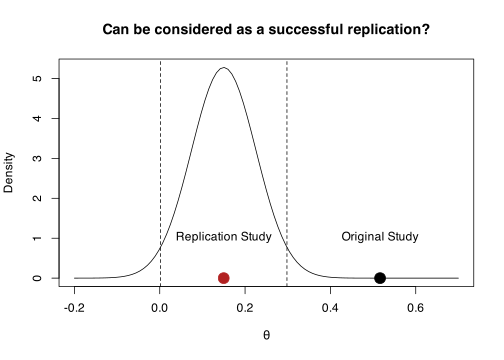
10.5 Confidence Interval, replication within original
Another approach check if the replication attempt \(\theta_{rep}\) is contained in the % confidence interval of the original study \(\theta_{orig}\). Formally:
\[ \theta_{orig} - \Phi(\alpha/2) \sqrt{\sigma^2_{orig}} < \theta_{rep} < \theta_{orig} + \Phi(\alpha/2) \sqrt{\sigma^2_{orig}} \]
Where \(\Phi\) is the cumulative standard normal distribution, \(\alpha\) is the type-1 error rate.
- Take into account the size of the effect and the precision of \(\theta_{orig}\)
- The original study is assumed to be a reliable estimation
- No extension for many-to-one designs
- Low precise original studies lead to higher success rate
se_orig <- sqrt(4 / (2 * n_orig))
ci_orig <- theta_orig + qnorm(c(0.025, 0.975)) * se_orig
curve(dnorm(x, theta_orig, se_orig),
-1, 2,
ylab = "Density",
xlab = latex2exp::TeX("$\\theta$"))
abline(v = ci_orig, lty = "dashed")
points(theta_orig, 0, pch = 19, cex = 2)
points(theta_rep, 0, pch = 19, cex = 2, col = "firebrick")
legend("topleft",
legend = c("Original", "Replication"),
fill = c("black", "firebrick"))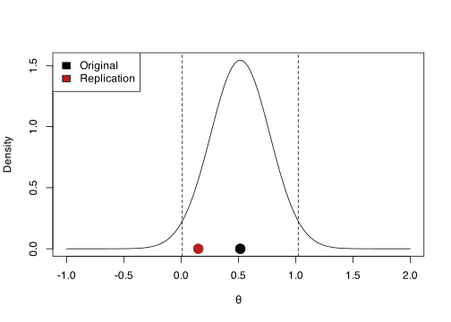
10.6 Confidence Interval, replication within original
One potential problem of this method regards that low precise original studies are “easier” to replicate due to larger confidence intervals.
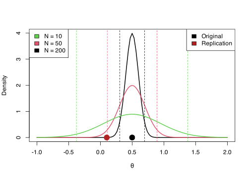
10.7 Confidence Interval, original within replication
The same approach can be applied checking if the original effect size is contained within the replication confidence interval. Clearly these methods depends on the precision of studies. Formally:
\[ \theta_{rep} - \Phi(\alpha/2) \sqrt{\sigma_{rep}^2} < \theta_{orig} < \theta_{rep} + \Phi(\alpha/2) \sqrt{\sigma_{rep}^2} \]
The method has the same pros and cons of the previous approach. One advantage is that usually replication studies are more precise (higher sample size) thus the parameter and the % CI is more reliable.
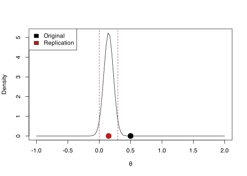
10.8 Prediction interval (PI), what to expect from a replication
One problem of the previous approaches is taking into account only the uncertainty of the original or the replication study. Patil et al. (2016) and Spence & Stanley (2016) proposed a method to take into account both sources of uncertainty.
If the original and replication studies comes from the same population, the sampling distribution of the difference is centered on 0 with a certain standard error \(\theta_{orig} - \theta_{rep_0} \sim \mathcal{N}\left( 0, \sqrt{\sigma^2_{\hat \theta_{orig} - \hat \theta_{rep}}} \right)\) (subscript \(0\) to indicate that is expected to be sampled from the same population as \(\theta_{orig}\))
\[ \hat \theta_{orig} \pm z_{95\%} \sqrt{\sigma^2_{\theta_{orig} - \theta_{rep}}} \]
If factors other than standard error influence the replication result, \(\theta_{rep_0}\) is not expected to be contained within the 95% prediction interval.
10.9 Prediction interval (PI), what to expect from a replication
In the case of a (un)standardized mean difference we can compute the prediction interval as:
\[ \sqrt{\sigma^2_{\epsilon_{\hat \theta_{orig} - \hat \theta_{rep_0}}}} = \sqrt{\left( \frac{\hat \sigma^2_{o1}}{n_{o1}} +\frac{\hat \sigma^2_{o2}}{n_{o2}}\right) + \left(\frac{\hat \sigma^2_{o1}}{n_{r1}} + \frac{\hat\sigma^2_{o2}}{n_{r2}}\right)} \]
The first term is just the standard error of the difference between the two groups in the original study and the second term is the standard error of the hypothetical replication study assuming the same standard deviation of the original but a different \(n\).
In this way we estimate an interval where, combining sampling variance from both studies and assuming that they comes from the same population, the replication should fall.
10.10 Prediction interval (PI), what to expect from a replication
set.seed(2025)
o1 <- rnorm(50, 0.5, 1) # group 1
o2 <- rnorm(50, 0, 1) # group 2
od <- mean(o1) - mean(o2) # effect size
se_o <- sqrt(var(o1)/50 + var(o2)/50) # standard error of the difference
n_r <- 100 # sample size replication
se_o_r <- sqrt(se_o^2 + (var(o1)/100 + var(o2)/100))
od + qnorm(c(0.025, 0.975)) * se_o_r[1] 0.325520 1.298378
- Take into account uncertainty of both studies
- We can plan a replication using the standard deviation of the original study and the expected sample size
- Low precise original studies lead to wide PI. For a replication study is difficult to fall outside the PI
- Mainly for one-to-one replications design
10.11 Mathur & VanderWeele (2020) \(p_{orig}\)
Mathur & VanderWeele (2020) proposed a new method based on the prediction interval to calculate a p value \(p_{orig}\) representing the probability that \(\theta_{orig}\) is consistent with the replications. This method is suited for many-to-one replication designs. Formally:
\[ P_{orig} = 2 \left[ 1 - \Phi \left( \frac{|\hat \theta_{orig} - \hat \mu_{\theta_{rep}}|}{\sqrt{\hat \tau^2 + \sigma^2_{orig} + \hat{SE}^2_{\hat \mu_{\theta_{rep}}}}} \right) \right] \]
- \(\mu_{\theta_{rep}}\) is the pooled (i.e., meta-analytic) estimation of the \(k\) replications
- \(\tau^2\) is the variance among replications
It is interpreted as the probability that \(\theta_{orig}\) is equal or more extreme that what observed. A very low \(p_{orig}\) suggest that the original study is inconsistent with replications.
- Suited for many-to-one designs
- We take into account all sources of uncertainty
- We have a p-value
The code is implemented in the Replicate and MetaUtility R packages:
tau2 <- 0.05
theta_rep <- 0.2
theta_orig <- 0.7
n_orig <- 30
n_rep <- 100
k <- 20
replications <- sim_studies(k, theta_rep, tau2, n_rep, n_rep)
original <- sim_studies(1, theta_orig, 0, n_orig, n_orig)
fit_rep <- metafor::rma(yi, vi, data = replications) # random-effects meta-analysis
Replicate::p_orig(original$yi, original$vi, fit_rep$b[[1]], fit_rep$tau2, fit_rep$se^2)[1] 0.5563241
Code
# standard errors assuming same n and variance 1
se_orig <- sqrt(4/(n_orig * 2))
se_rep <- sqrt(4/(n_rep * 2))
se_theta_rep <- sqrt(1/((1/(se_rep^2 + tau2)) * k)) # standard error of the random-effects estimate
sep <- sqrt(tau2 + se_orig^2 + se_theta_rep^2) # z of p-orig denominator
curve(dnorm(x, theta_rep, sep), theta_rep - 4*sep, theta_rep + 4*sep, ylab = "Density", xlab = latex2exp::TeX("\\theta"))
points(theta_orig, 0.02, pch = 19, cex = 2)
abline(v = qnorm(c(0.025, 0.975), theta_rep, sep), lty = "dashed", col = "firebrick")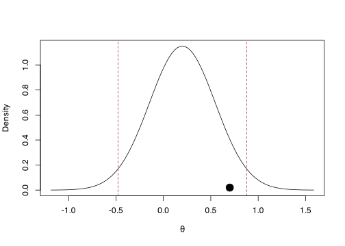
10.12 Mathur & VanderWeele (2020) \(\hat P_{> 0}\)
Another related metric is the \(\hat P_{> 0}\), representing the proportion of replications following the same direction as the original effect. Before simply computing the proportions we need to adjust the estimated \(\theta_{rep_i}\) with a shrinkage factor:
\[ \tilde{\theta}_{rep_i} = (\theta_{rep_i} - \mu_{\theta_{rep_i}}) \sqrt{\frac{\hat \tau^2}{\hat \tau^2 + v_{rep_i}}} \]
This method is somehow similar to the vote counting but we are adjusting the effects taking into account \(\tau^2\).
# compute calibrated estimation for the replications
# use restricted maximum likelihood to estimate tau2 under the hood
theta_sh <- MetaUtility::calib_ests(replications$yi, replications$sei, method = "REML")
mean(theta_sh > 0)[1] 0.75
The authors suggest a bootstrapping approach for making inference on \(\hat P_{> 0}\)
nboot <- 1e4
theta_boot <- matrix(0, nrow = nboot, ncol = k)
for(i in 1:nboot){
idx <- sample(1:nrow(replications), nrow(replications), replace = TRUE)
replications_boot <- replications[idx, ]
theta_cal <- MetaUtility::calib_ests(replications_boot$yi,
replications_boot$sei,
method = "REML")
theta_boot[i, ] <- theta_cal
}
# calculate
p_greater_boot <- apply(theta_boot, 1, function(x) mean(x > 0))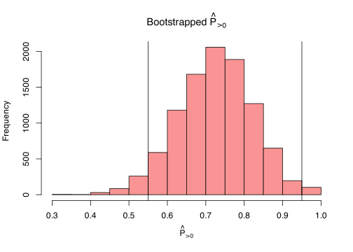
10.13 Mathur & VanderWeele (2020) \(\hat P_{\gtrless q*}\)
Instead of using 0 as threshold, we can use meaningful effect size to be considered as low but different from 0. \(\hat P_{\gtrless q*}\) is the proportion of (calibrated) replications greater or lower than the \(q*\) value. This framework is similar to equivalence and minimum effect size testing (Lakens et al., 2018).
q <- 0.2 # minimum non zero effect
fit <- metafor::rma(yi, vi, data = replications)
# see ?MetaUtility::prop_stronger
MetaUtility::prop_stronger(q = q,
M = fit$b[[1]],
t2 = fit$tau2,
tail = "above",
estimate.method = "calibrated",
ci.method = "calibrated",
dat = replications,
yi.name = "yi",
vi.name = "vi") est se lo hi bt.mn shapiro.pval
1 0.35 0.1137901 0.1 0.55 0.3573 0.5224829
10.14 Combining original and replications
Another approach is to combine the original and replication results (both one-to-one and many-to-one) using a meta-analysis model. Then we can test if the pooled estimate is different from 0 or another meaningful value.
- Use all the available information, especially when fitting a random-effects model
- Take into account the precision by inverse-variance weighting
- Did not consider the publication bias
- For one-to-one designs only a fixed-effects model can be used
# fixed-effects
fit_fixed <- rma(yi, vi, method = "FE")
summary(fit_fixed)
Fixed-Effects Model (k = 20)
logLik deviance AIC BIC AICc
20.7415 -0.0000 -39.4829 -38.4872 -39.2607
I^2 (total heterogeneity / total variability): 0.00%
H^2 (total variability / sampling variability): 0.00
Test for Heterogeneity:
Q(df = 19) = 0.0000, p-val = 1.0000
Model Results:
estimate se zval pval ci.lb ci.ub
0.2000 0.0316 6.3246 <.0001 signif. codes:># fixed-effects
fit_random <- rma(yi, vi, method = "REML")
summary(fit_random)
Random-Effects Model (k = 20; tau^2 estimator: REML)
logLik deviance AIC BIC AICc
19.7044 -39.4088 -35.4088 -33.5199 -34.6588
tau^2 (estimated amount of total heterogeneity): 0 (SE = 0.0065)
tau (square root of estimated tau^2 value): 0
I^2 (total heterogeneity / total variability): 0.00%
H^2 (total variability / sampling variability): 1.00
Test for Heterogeneity:
Q(df = 19) = 0.0000, p-val = 1.0000
Model Results:
estimate se zval pval ci.lb ci.ub
0.2000 0.0316 6.3246 <.0001 signif. codes:>The previous approach can be also implemented combining replications into a single effect and then compare the original with the combined replication study.
This is similar to using the CI or PI approaches but the replication effect will probably by very precise due to pooling multiple studies.
10.15 Q Statistics
An interesting proposal is using the Q statistics (Hedges & Schauer, 2019a, 2019b, 2019c, 2021; Schauer, 2022; Schauer & Hedges, 2020; Schauer & Hedges, 2021), commonly used in meta-analysis to assess the presence of heterogeneity. Formally:
\[ Q = \sum_{i = 1}^{k} \frac{(\theta_i - \bar \theta_w)^2}{\sigma^2_i} \]
Where \(\bar \theta_w\) is the inverse-variance weighted average (i.g., fixed-effect model). The Q statistics is essentially a weighted sum of squares. Under the null hypothesis where all studies are equal \(\theta_1 = \theta_2, ... = \theta_i\) the Q statistics has a \(\chi^2\) distribution with \(k - 1\) degrees of freedom. Under the alternative hypothesis the distribution is a non-central \(\chi^2\) with non centrality parameter \(\lambda\). The expected value of the \(Q\) is \(E(Q) = v + \lambda\), where \(v\) are the degrees of freedom.
10.16 Q Statistics
Hedges & Schauer proposed to use the Q statistics to evaluate the consistency of a series of replications:
- In case of exact replication, \(\lambda = 0\) because \(\theta_1 = \theta_2, ... = \theta_k\).
- In case of approximate replication, \(\lambda < \lambda_0\) where \(\lambda_0\) is the maximum value considered as equal to null (i.e., 0).
This approach is testing the consistency (i.e., homogeneity) of replications. A successful replication should minimize the heterogeneity and the presence of a significant Q statistics should bring evidence for not replicating the effect1.
10.17 Q Statistics
The method has been expanded and formalized in several papers with different objectives:
. . .
- to cover different replications setup (burden of proof on replicating vs non-replicating, many-to-one and one-to-one, etc.)
. . .
- interpret and choose the \(\lambda\) parameter given that is the core of the approach
. . .
- evaluating the power and statistical properties under different replication scenarios
. . .
- the standard implementation put the burden of proof on non-replication. Thus \(H_0\) is that studies replicates. They provided also a series of tests with the opposite formulation.
10.18 Q Statistics
In the case of evaluating an exact replication we can use the Qrep() function that simply calculate the p-value based on the Q sampling distribution.
Qrep <- function(yi, vi, lambda0 = 0, alpha = 0.05){
fit <- metafor::rma(yi, vi)
k <- fit$k
Q <- fit$QE
df <- k - 1
Qp <- pchisq(Q, df = df, ncp = lambda0, lower.tail = FALSE)
pval <- ifelse(Qp < 0.001, "p < 0.001", sprintf("p = %.3f", Qp))
lambda <- ifelse((Q - df) < 0, 0, (Q - df))
res <- list(Q = Q, lambda = lambda, pval = Qp, df = df, k = k, alpha = alpha, lambda0 = lambda0)
H0 <- ifelse(lambda0 != 0, paste("H0: lambda <", lambda0), "H0: lambda = 0")
title <- ifelse(lambda0 != 0, "Q test for Approximate Replication", "Q test for Exact Replication")
cli::cli_rule()
cat(cli::col_blue(cli::style_bold(title)), "\n\n")
cat(sprintf("Q = %.3f (df = %s), lambda = %.3f, %s", res$Q, res$df, lambda, pval), "\n")
cat(H0, "\n")
cli::cli_rule()
class(res) <- "Qrep"
invisible(res)
}Q test for Exact Replication
Q = 367.321 (df = 99), lambda = 268.321, p Qres <- Qrep(dat$yi, dat$vi)Q test for Exact Replication
Q = 367.321 (df = 99), lambda = 268.321, p plot.Qrep(Qres)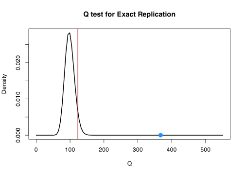
10.19 Q Statistics for approximate replication
In case of approximate replication we need to set \(\lambda_0\) to a meaningful value but the overall test is the same. The critical \(Q\) is no longer evaluated with a central \(\chi^2\) but a non-central \(\chi^2\) with \(\lambda_0\) as non-centrality parameter.
Hedges & Schauer (2019c) provide different strategies to choose \(\lambda_0\). They found that under some assumptions, \(\lambda = (k - 1) \frac{\tau^2}{\tilde{v}}\)
Given that we introduced the \(I^2\) statistics we can derive a \(\lambda_0\) based in \(I^2\). F. L. Schmidt & Hunter (2014) proposed that when \(\tilde{v}\) is at least 75% of total variance \(\tilde{v} + \tau^2\) thus \(\tau^2\) could be considered neglegible. This corresponds to a \(I^2 = 25%\) and a ratio \(\frac{\tau^2}{\tilde{v}} = 1/3\) thus \(\lambda_0 = \frac{(k - 1)}{3}\) can be considered a neglegible heterogeneity
10.20 Q Statistics for approximate replication
k <- 100
dat <- sim_studies(k, 0.5, 0, 50, 50)
Qrep(dat$yi, dat$vi, lambda0 = (k - 1)/3)Q test for Approximate Replication
Q = 98.121 (df = 99), lambda = 0.000, p = 0.977
H0: lambda 10.21 Small Telescopes (Simonsohn, 2015)
Simonsohn (2015) introduced 3 main questions when evaluating replicability:
. . .
- When we combine data from the original and replication study, what is our best guess of the overall effect?
. . .
meta-analysis
. . .
- Is the effect of the replication study different from the original study?
. . .
meta-analysis and standard tests, but problematic in terms of statistical power
. . .
- Does the replication study suggest that the effect of interest is undetectable different from zero?
. . .
small telescopes
10.22 Small Telescopes (Simonsohn, 2015)
The idea is simple but quite powerful and insightful. Let’s assume that an original study found an effect of \(y_{orig} = 0.7\) on a two-sample design with \(n = 20\) per group.
. . .
- we define a threshold as the effect size that is associated with a certain low power level e.g., \(33\%\) given the sample size i.e. \(\theta_{small} = 0.5\)
- the replication study found an effect of \(y_{rep} = 0.2\) with \(n = 100\) subjects
. . .
If the \(y_{rep}\) is lower (i.e., the upper bound of the confidence interval) than the small effect (\(\theta_{small} = 0.5\)) we conclude that the effect is probably so tiny that could not have been detected by the original study. Thus there is no evidence for a replication.
10.23 Small Telescopes (Simonsohn, 2015)
We can use the custom small_telescope() function on simulated data:
small_telescope <- function(or_d,
or_se,
rep_d,
rep_se,
small,
ci = 0.95){
# quantile for the ci
qs <- c((1 - ci)/2, 1 - (1 - ci)/2)
# original confidence interval
or_ci <- or_d + qnorm(qs) * or_se
# replication confidence interval
rep_ci <- rep_d + qnorm(qs) * rep_se
# small power
is_replicated <- rep_ci[2] > small
msg_original <- sprintf("Original Study: d = %.3f %s CI = [%.3f, %.3f]",
or_d, ci, or_ci[1], or_ci[2])
msg_replicated <- sprintf("Replication Study: d = %.3f %s CI = [%.3f, %.3f]",
rep_d, ci, rep_ci[1], rep_ci[2])
if(is_replicated){
msg_res <- sprintf("The replicated effect is not smaller than the small effect (%.3f), (probably) replication!", small)
msg_res <- cli::col_green(msg_res)
}else{
msg_res <- sprintf("The replicated effect is smaller than the small effect (%.3f), no replication!", small)
msg_res <- cli::col_red(msg_res)
}
out <- data.frame(id = c("original", "replication"),
d = c(or_d, rep_d),
lower = c(or_ci[1], rep_ci[1]),
upper = c(or_ci[2], rep_ci[2]),
small = small
)
# nice message
cat(
msg_original,
msg_replicated,
cli::rule(),
msg_res,
sep = "\n"
)
invisible(out)
}10.24 Small Telescopes (Simonsohn, 2015)
set.seed(2025)
d <- 0.2 # real effect
# original study
or_n <- 20
or_d <- 0.7
or_se <- sqrt(1/20 + 1/20)
d_small <- pwr::pwr.t.test(or_n, power = 0.33)$d
# replication
rep_n <- 100 # sample size of replication study
g0 <- rnorm(rep_n, 0, 1)
g1 <- rnorm(rep_n, d, 1)
rep_d <- mean(g1) - mean(g0)
rep_se <- sqrt(var(g1)/rep_n + var(g0)/rep_n)Here we are using the pwr::pwr.t.test() to compute the effect size \(\theta_{small}\) (in code d) associated with 33% power.
10.25 Small Telescopes (Simonsohn, 2015)
small_telescope(or_d, or_se, rep_d, rep_se, d_small, ci = 0.95)Original Study: d = 0.700 0.95 CI = [0.080, 1.320]
Replication Study: d = 0.214 0.95 CI = [-0.061, 0.490]
────────────────────────────────────────────────────────────────────────────────
The replicated effect is smaller than the small effect (0.493), no replication!
And a (quite over-killed) plot:
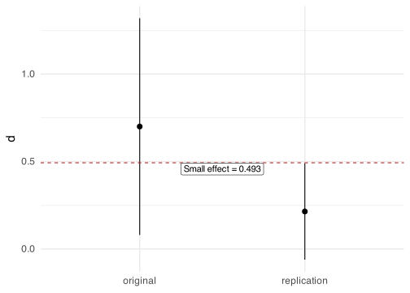
11 Bayesian Methods
11.1 Bayes Factor
Verhagen & Wagenmakers (2014) proposed a method to estimate the evidence of a replication study. The core topics to understand the method are:
- Bayesian hypothesis testing using the Bayes Factor (see, Rouder et al., 2009)
- Bayes Factor using the Savage-Dickey density ratio (SDR, Wagenmakers et al., 2010)
11.2 Bayesian inference
Bayesian inference is the statistical procedure where prior beliefs about a phenomenon are combined, using the Bayes theorem, with evidence from data to obtain the posterior beliefs.
. . .
The interesting part is that the researcher express the prior beliefs in probabilistic terms. Then after collecting data, evidence from the experiment is combined increasing or decreasing the plausibility of prior beliefs.
. . .
Let’s make an (not a very innovative :smile:) example. We need to evaluate the fairness of a coin. The crucial parameter is \(\theta\) that is the probability of success (e.g., head). We have our prior belief about the coin (e.g., fair but with some uncertainty). We toss the coin \(k\) times and we observe \(x\) heads. What are my conclusions?
11.3 Bayesian inference
\[ p(\theta|D) = \frac{p(D|\theta) \; p(\theta)}{p(D)} \] Where \(\theta\) is our parameter and \(D\) the data. \(p(\theta|D)\) is the posterior distribution that is the product between the likelihood \(p(D|\theta)\) and the prior \(p(\theta)\). \(p(D)\) is the probability of the data (aka marginal likelihood) and is necessary only for the posterior to be a proper probability distribution.
We can “read” the formula as: The probability of the parameter given the data is the product between the likelihood of the data given the parameter and the prior probability of the parameter.
11.4 Bayesian inference
Let’s express our prior belief in probabilistic terms:
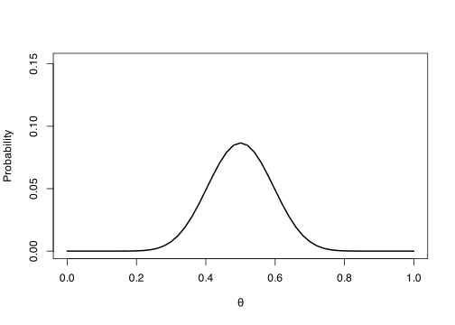
11.5 Bayesian inference
Now we collect data and we observe \(x = 40\) tails out of \(k = 50\) trials thus \(\hat{\theta} = 0.8\) and compute the likelihood:
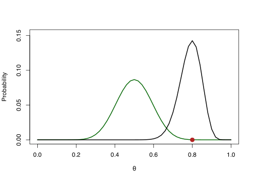
11.6 Bayesian inference
Finally we combine, using the Bayes rule, prior and likelihood to obtain the posterior distribution:
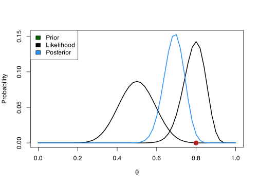
11.7 Bayes Factor
The idea of the Bayes Factor is computing the evidence of the data under two competing hypotheses, \(H_0\) and \(H_1\) (~ \(\theta\) in our previous example):
\[ \frac{p(H_0|D)}{p(H_1|D)} = \frac{f(D|H_0)}{f(D|H_1)} \times \frac{p(H_0)}{p(H_1)} \]
Where \(f\) is the likelihood function, \(y\) are the data. The \(\frac{p(H_0)}{p(H_1)}\) is the prior odds of the two hypothesis. The Bayes Factor is the ratio between the likelihood of the data under the two hypotheses.
11.8 Bayes Factor using the SDR
Calculating the BF can be problematic in some condition. The SDR is a convenient shortcut to calculate the Bayes Factor (Wagenmakers et al., 2010). The idea is that the ratio between the prior and posterior density distribution for the \(H_1\) is an estimate of the Bayes factor calculated in the standard way.
\[ BF_{01} = \frac{p(D|H_0)}{p(D|H_1)} = \frac{p(\theta = x|D, H_1)}{p(\theta = x, H_1)} \]
Where \(\theta\) is the parameter of interest and \(x\) is the null value under \(H_0\) e.g., 0. and \(D\) are the data.
11.9 Bayes Factor using the SDR, Example:
Following the previous example \(H_0: \theta = 0.5\). Under \(H_1\) we use a completely uninformative prior by setting \(\theta \sim Beta(1, 1)\).
We flip again the coin 20 times and we found that \(\hat \theta = 0.75\).
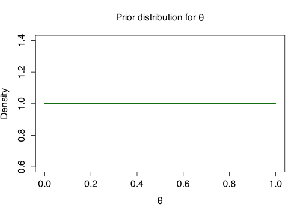
11.10 Bayes Factor using the SDR, Example:
The ratio between the two black dots is the Bayes Factor.
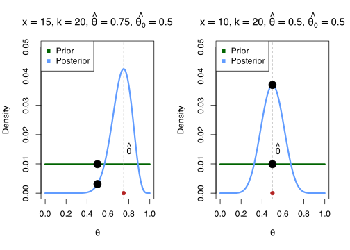
If the probability density of the null value decrease after seeing data (from prior to posterior) this means that the Bayes factor should favor the alternative hypothesis. On the left, the density of 0.5 is lower after seeing the data –> evidence for H1 On the right the density of 0.5 is higher after seeing the data –> evidence for H0
11.11 Verhagen & Wagenmakers (2014) model2
The idea is using the posterior distribution of the original study as prior for a Bayesian hypothesis testing where:
- \(H_0: \theta_{rep} = 0\) thus there is no effect in the replication study
- \(H_1: \theta_{rep} \neq 0\) and in particular is distributed as \(\delta \sim \mathcal{N}(\theta_{orig}, \sigma^2_{orig})\) where \(\theta_{orig}\) and \(\sigma^2_{orig}\) are the mean and standard error of the original study
If \(H_0\) is more likely after seeing the data, there is evidence against the replication (i.e., \(BF_{r0} > 1\)) otherwise there is evidence for a successful replication (\(BF_{r1} > 1\)).
11.12 Verhagen & Wagenmakers (2014) model
Warning
Disclaimer: The actual implementation of Verhagen & Wagenmakers (2014) is different (they use the \(t\) statistics). The proposed implementation for the current workshop use a standard linear model.
11.13 Example
Let’s assume that the original study (\(n = 30\)) estimate a \(y_{orig} = 0.4\) and a standard error of \(\sigma^2/n\).
# original study
n <- 30
yorig <- 0.4
se <- sqrt(1/30)
Note
The assumption of Verhagen & Wagenmakers (2014) is that the original study performed a Bayesian analysis with a completely flat prior. Thus the confidence interval is the same as the Bayesian credible interval.
11.14 Example
For this reason, the posterior distribution of the original study can be approximated as:
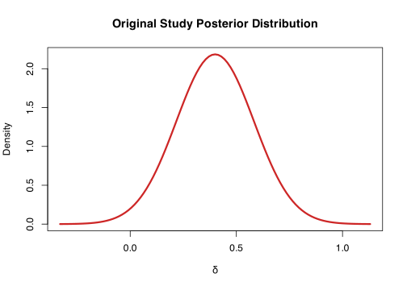
With an uninformative prior the credible interval is the same as the confidence interval
11.15 Example
Let’s imagine that a new study tried to replicate the original one. They collected \(n = 100\) participants with the same protocol and found and effect of \(y_{rep} = 0.1\).
11.16 Example
We can analyze these data with an intercept-only regression model setting as prior the posterior distribution of the original study:
# setting the prior on the intercept parameter
prior <- rstanarm::normal(location = yorig,
scale = se)
# fitting the bayesian linear regression
fit <- stan_glm(y ~ 1,
data = dat,
prior_intercept = prior,
refresh = FALSE)
summary(fit)
Model Info:
function: stan_glm
family: gaussian [identity]
formula: y ~ 1
algorithm: sampling
sample: 4000 (posterior sample size)
priors: see help('prior_summary')
observations: 100
predictors: 1
Estimates:
mean sd 10% 50% 90%
(Intercept) 0.2 0.1 0.1 0.2 0.3
sigma 1.0 0.1 0.9 1.0 1.1
Fit Diagnostics:
mean sd 10% 50% 90%
mean_PPD 0.2 0.1 0.0 0.2 0.3
The mean_ppd is the sample average posterior predictive distribution of the outcome variable (for details see help('summary.stanreg')).
MCMC diagnostics
mcse Rhat n_eff
(Intercept) 0.0 1.0 2609
sigma 0.0 1.0 2608
mean_PPD 0.0 1.0 3185
log-posterior 0.0 1.0 1693
For each parameter, mcse is Monte Carlo standard error, n_eff is a crude measure of effective sample size, and Rhat is the potential scale reduction factor on split chains (at convergence Rhat=1).
11.17 Example
We can use the bayestestR::bayesfactor_pointnull() to calculate the BF using the Savage-Dickey density ratio.
bf <- bayestestR::bayesfactor_pointnull(fit, null = 0)
print(bf)plot(bf)11.18 Example
You can also use the bf_replication() function:
bf_replication <- function(mu_original,
se_original,
replication){
# prior based on the original study
prior <- rstanarm::normal(location = mu_original, scale = se_original)
# to dataframe
replication <- data.frame(y = replication)
fit <- rstanarm::stan_glm(y ~ 1,
data = replication,
prior_intercept = prior,
refresh = 0) # avoid printing
bf <- bayestestR::bayesfactor_pointnull(fit, null = 0, verbose = FALSE)
title <- "Bayes Factor Replication Rate"
posterior <- "Posterior Distribution ~ Mean: %.3f, SE: %.3f"
replication <- "Evidence for replication: %3f (log %.3f)"
non_replication <- "Evidence for non replication: %3f (log %.3f)"
if(bf$log_BF > 0){
replication <- cli::col_green(sprintf(replication, exp(bf$log_BF), bf$log_BF))
non_replication <- sprintf(non_replication, 1/exp(bf$log_BF), -bf$log_BF)
}else{
replication <- sprintf(replication, exp(bf$log_BF), bf$log_BF)
non_replication <- cli::col_red(sprintf(non_replication, 1/exp(bf$log_BF), -bf$log_BF))
}
outlist <- list(
fit = fit,
bf = bf
)
cat(
cli::col_blue(title),
cli::rule(),
sprintf(posterior, fit$coefficients, fit$ses),
"\n",
replication,
non_replication,
sep = "\n"
)
invisible(outlist)
}11.19 Example
bf_replication(mu_original = yorig, se_original = se, replication = yrep)11.20 Example
A better custom plot:
bfplot <- data.frame(
prior = rnorm(1e5, yorig, se),
posterior = rnorm(1e5, fit$coefficients, fit$ses)
)
plt <- ggplot() +
stat_function(geom = "line",
aes(color = "Original Study (Prior)"),
linewidth = 1,
alpha = 0.3,
fun = dnorm, args = list(mean = yorig, sd = se)) +
stat_function(geom = "line",
linewidth = 1,
aes(color = "Replication Study (Posterior)"),
fun = dnorm, args = list(mean = fit$coefficients, sd = fit$ses)) +
xlim(c(-0.5, 1.2)) +
geom_point(aes(x = c(0, 0), y = c(dnorm(0, yorig, sd = se),
dnorm(0, fit$coefficients, sd = fit$ses))),
size = 3) +
xlab(latex2exp::TeX("\\delta")) +
ylab("Density") +
theme(legend.position = "bottom",
legend.title = element_blank())11.21 Example
A better custom plot:
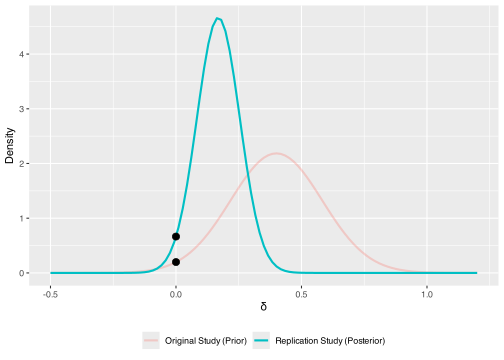
11.22 References
Anderson, S. F., & Kelley, K. (2024). Sample size planning for replication studies: The devil is in the design. Psychological Methods, 29, 844–867. https://doi.org/10.1037/met0000520
Brandt, M. J., IJzerman, H., Dijksterhuis, A., Farach, F. J., Geller, J., Giner-Sorolla, R., Grange, J. A., Perugini, M., Spies, J. R., & Veer, A. van ’t. (2014). The replication recipe: What makes for a convincing replication? Journal of Experimental Social Psychology, 50, 217–224. https://doi.org/10.1016/j.jesp.2013.10.005
Bushman, B. J., & Wang, M. C. (2009). Vote-counting procedures in meta-analysis. In The handbook of research synthesis and meta-analysis (pp. 207–220). Russell Sage Foundation.
Hedges, L. V., & Olkin, I. (1980). Vote-counting methods in research synthesis. Psychological Bulletin, 88, 359–369. https://doi.org/10.1037/0033-2909.88.2.359
Hedges, L. V., & Schauer, J. M. (2019a). Consistency of effects is important in replication: Rejoinder to mathur and VanderWeele (2019). Psychological Methods, 24, 576–577. https://doi.org/10.1037/met0000237
Hedges, L. V., & Schauer, J. M. (2019b). More than one replication study is needed for unambiguous tests of replication. Journal of Educational and Behavioral Statistics: A Quarterly Publication Sponsored by the American Educational Research Association and the American Statistical Association, 44, 543–570. https://doi.org/10.3102/1076998619852953
Hedges, L. V., & Schauer, J. M. (2019c). Statistical analyses for studying replication: Meta-analytic perspectives. Psychological Methods, 24, 557–570. https://doi.org/10.1037/met0000189
Hedges, L. V., & Schauer, J. M. (2021). The design of replication studies. Journal of the Royal Statistical Society. Series A, (Statistics in Society), 184, 868–886. https://doi.org/10.1111/rssa.12688
Heyard, R., Pawel, S., Frese, J., Voelkl, B., Würbel, H., McCann, S., Held, L., Wever, K. E., Hartmann, H., Townsin, L., & Zellers, S. (2024). A scoping review on metrics to quantify reproducibility: A multitude of questions leads to a multitude of metrics. https://scholar.google.com/citations?view_op=view_citation&hl=en&citation_for_view=JAb7P1QAAAAJ:ldfaerwXgEUC
Jeffreys, H. (1973). Scientific inference. Cambridge University Press.
Lakens, D., Scheel, A. M., & Isager, P. M. (2018). Equivalence testing for psychological research: A tutorial. Advances in Methods and Practices in Psychological Science, 1, 259–269. https://doi.org/10.1177/2515245918770963
Ly, A., Etz, A., Marsman, M., & Wagenmakers, E.-J. (2019). Replication bayes factors from evidence updating. Behavior Research Methods, 51, 2498–2508. https://doi.org/10.3758/s13428-018-1092-x
Mathur, M. B., & VanderWeele, T. J. (2019). Challenges and suggestions for defining replication "success" when effects may be heterogeneous: Comment on hedges and schauer (2019). Psychological Methods, 24, 571–575. https://doi.org/10.1037/met0000223
Mathur, M. B., & VanderWeele, T. J. (2020). New statistical metrics for multisite replication projects. Journal of the Royal Statistical Society. Series A, (Statistics in Society), 183, 1145–1166. https://doi.org/10.1111/rssa.12572
Nosek, B. A., & Errington, T. M. (2020). What is replication? PLoS Biology, 18, e3000691. https://doi.org/10.1371/journal.pbio.3000691
Patil, P., Peng, R. D., & Leek, J. T. (2016). What should researchers expect when they replicate studies? A statistical view of replicability in psychological science. Perspectives on Psychological Science: A Journal of the Association for Psychological Science, 11, 539–544. https://doi.org/10.1177/1745691616646366
Rouder, J. N., Speckman, P. L., Sun, D., Morey, R. D., & Iverson, G. (2009). Bayesian t tests for accepting and rejecting the null hypothesis. Psychonomic Bulletin & Review, 16, 225–237. https://doi.org/10.3758/PBR.16.2.225
Schauer, J. M. (2022). Replicability and meta-analysis. In W. O’Donohue, A. Masuda, & S. Lilienfeld (Eds.), Avoiding questionable research practices in applied psychology (pp. 301–342). Springer International Publishing. https://doi.org/10.1007/978-3-031-04968-2_14
Schauer, J. M., & Hedges, L. V. (2020). Assessing heterogeneity and power in replications of psychological experiments. Psychological Bulletin, 146, 701–719. https://doi.org/10.1037/bul0000232
Schauer, J. M., & Hedges, L. V. (2021). Reconsidering statistical methods for assessing replication. Psychological Methods, 26, 127–139. https://doi.org/10.1037/met0000302
Schmidt, F. L., & Hunter, J. E. (2014). Methods of meta-analysis: Correcting error and bias in research findings (3rd ed.). SAGE Publications. https://doi.org/10.4135/9781483398105
Schmidt, S. (2009). Shall we really do it again? The powerful concept of replication is neglected in the social sciences. Review of General Psychology: Journal of Division 1, of the American Psychological Association, 13, 90–100. https://doi.org/10.1037/a0015108
Simonsohn, U. (2015). Small telescopes: Detectability and the evaluation of replication results: Detectability and the evaluation of replication results. Psychological Science, 26, 559–569. https://doi.org/10.1177/0956797614567341
Spence, J. R., & Stanley, D. J. (2016). Prediction interval: What to expect when you’re expecting … a replication. PloS One, 11, e0162874. https://doi.org/10.1371/journal.pone.0162874
Valentine, J. C., Biglan, A., Boruch, R. F., Castro, F. G., Collins, L. M., Flay, B. R., Kellam, S., Mościcki, E. K., & Schinke, S. P. (2011). Replication in prevention science. Prevention Science: The Official Journal of the Society for Prevention Research, 12, 103–117. https://doi.org/10.1007/s11121-011-0217-6
Verhagen, J., & Wagenmakers, E.-J. (2014). Bayesian tests to quantify the result of a replication attempt. Journal of Experimental Psychology. General, 143, 1457–1475. https://doi.org/10.1037/a0036731
Wagenmakers, E.-J., Lodewyckx, T., Kuriyal, H., & Grasman, R. (2010). Bayesian hypothesis testing for psychologists: A tutorial on the savage–dickey method. Cognitive Psychology, 60, 158–189. https://doi.org/10.1016/j.cogpsych.2009.12.001
The approach has been debated by a series of opinion papers (see Hedges & Schauer, 2019a; Mathur & VanderWeele, 2019)↩︎